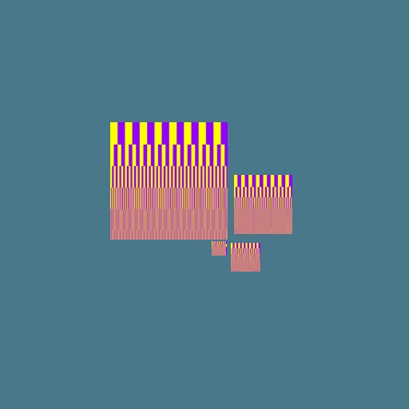

Summed Area Table Antialiasing:
A method for antialiasing (smoothing out a picture, getting rid of jaggies). This algorithm is very simple. A table is precomputed for a given texture so that at every point the sum of the color contained to the left and lower of that point is stored. When rendering a pixel the area of the pixel is mapped onto this precomputed table. The sum of colors contained in the screen pixels area can then be obtained. This provides the average color of that area with very little computation. It is not a perfect algorithm, but it is better than MIP-mapping.

Cubes of various scales are shown without and with Summed Area Table antialiasing. The texture used alters between yellow and purple at increasing frequencies. Notice that in the first image only pure yellow or pure purple is drawn. In the second these colors are blurred heavily to converge towards the average of these two colors. Aliasing can still be seen in the second image, but it is considerably better than in the first image.
copyright 2/14/1999 Vince Scheib